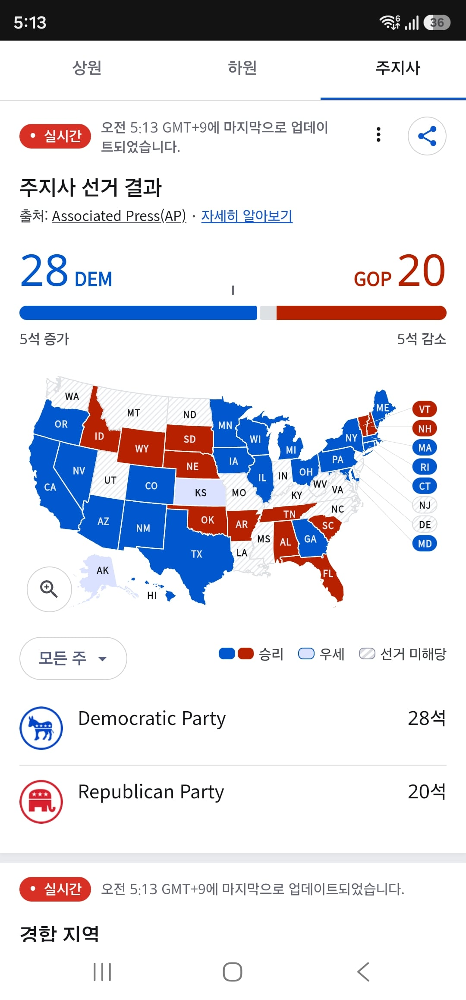
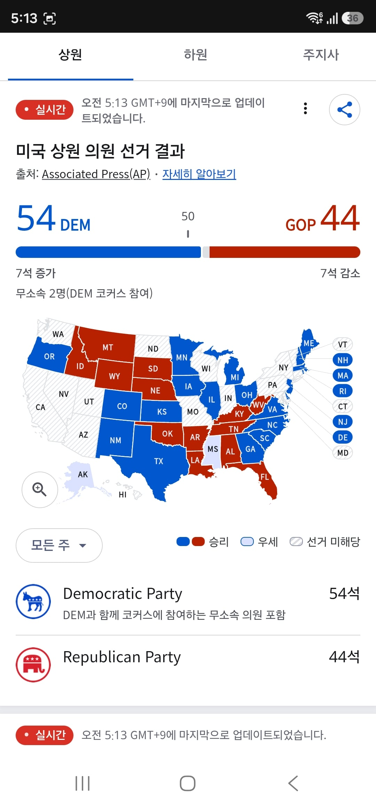
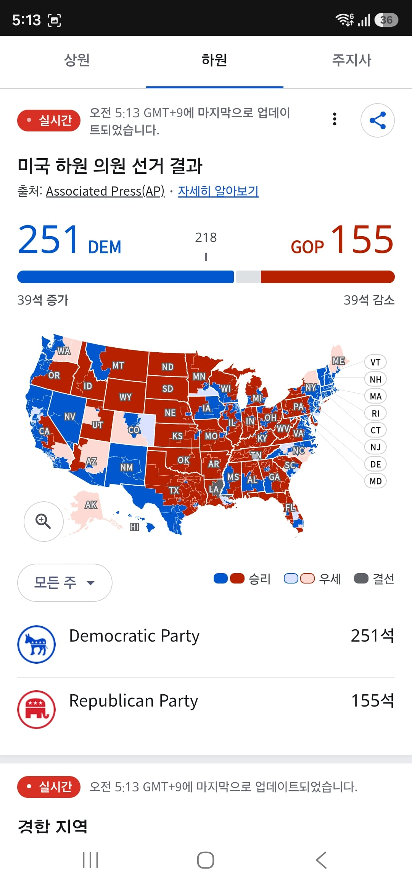

검표 거의 끝나가고
상원 하원 주지사 다 따임
각하! 미시시피에서 역사상 최초로 흑인 상원의원이 당선됐습니다!
온 미국이 차별없이 연대하고 있습니다!
........이걸로 되었다
트럼프, 이렇게까지 할 필요는 없었잖아요!
어째서......!
..............................
"Make Amerika Great Again"



검표 거의 끝나가고
상원 하원 주지사 다 따임
각하! 미시시피에서 역사상 최초로 흑인 상원의원이 당선됐습니다!
온 미국이 차별없이 연대하고 있습니다!
........이걸로 되었다
트럼프, 이렇게까지 할 필요는 없었잖아요!
어째서......!
..............................
"Make Amerika Great Again"
구래도 상원은 나름 선방했네 초기예측보다눈
악역은 익슉하니까...
울컥!
돈이가고야 봄인줄 알았습니다.
트황상
트황상ㅜㅜㅜ
엌ㅋㅋㅋ 다크나이트 ㅋㅋㅋ